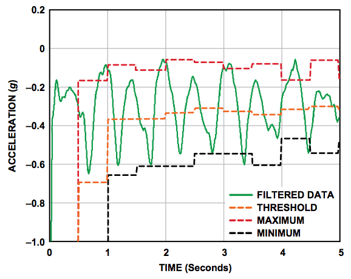
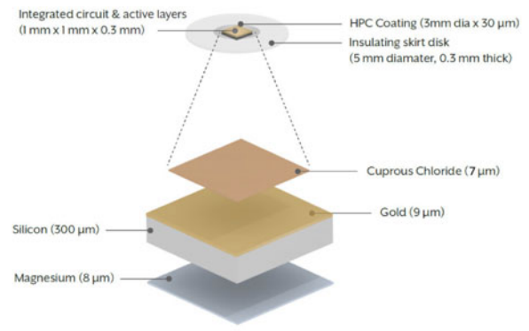

Wearable technology
The wearable technology revolution is taking place right before our eyes, so we'll take you through a few of the most popular and innovative products on the market.
Fitbit watches are one the most popular forms of wearable healthcare technology. They are wireless activity trackers that measure a wide range of data including heart rate, quality of sleep, number of steps walked and steps climbed. Alongside the watches, Fitbit provides a mobile app and website that can be used without the tracker to allow users to track their diet and activities and set short and long-term goals.
Fitbit trackers work using a three-axis accelerometer to track motion. [3] An accelerometer is an electromechanical device which measures the acceleration of a moving object when attached to it. It works in many different ways, two of which involve the piezoelectric effect and the capacitance sensor. [2] The most common form of accelerators use piezoelectric effect and microscopic crystal structures which are put under stress as a result of accelerative forces. From this stress, the crystals produce a voltage and the accelerometer translates to voltage to determine the velocity and orientation of the moving body.
The capacitance accelerometer detects and records vibrations produced on a device. The components of the accelerometer are capable of storing capacitance and when they are moved, the generated capacitance is sensed by the accelerometer’s sensors and translated into voltage for interpretation by the accelerometer. Most accelerometers are composed of multiple axes to allow the accelerometer to measure motion in any direction, allowing for more precise measurements that those with fewer axes.
Fitbit has a unique algorithm for step counting that looks for patterns in a person’s motion that suggests they are walking and determines whether the motion’s size is large enough by setting a threshold. If the motion and acceleration measurement meet this threshold, the movement counts as a step. [3] While Fitbit’s algorithm is not publicly available, step counting algorithms generally work as follows.
As a three-axis accelerometer is used, three measurements (x, y, z) are taken corresponding to vertical, forward and side acceleration of a person. [1] Regardless of which way a person is moving, at least one axis will have relatively large period acceleration changes so peak detection and a dynamic threshold-decision algorithm for acceleration are applied on all three axes in order to detect a cycle of walking. The dynamic threshold-decision algorithm works by continuously updates the maximum and minimum values of the three-axis acceleration every set number of samples. The average value (maximum + minimum)/2 is called the dynamic threshold level and this level is used to decide whether steps have been taken.
The peak detection algorithm works by calculating the steps from the x-, y- or z- axis depending on which axis has the largest change in acceleration. [1] However, the change in acceleration must meet a certain threshold value or they will be discarded. There are many other methods used to avoid over or undercounting such as the use of a time window to discard invalid vibrations that fall outside of a certain time interval (too fast or too slow). By means of an algorithm similar to this, Fitbit have become the biggest-selling maker of activity trackers in the world.
↑

One of the latest developments in wearable technology is the HealthPatch MD, a bionic band-aid consisting of a variety of sensors that monitor heart rate, respiration, temperature, steps taken, sleep cycle, stress levels and whether the user has fallen or become incapacitated. [1] It is the first medical technology device of its kind as this small, unobtrusive patch worn on the chest is capable of taking clinical-grade biometric measurements. It also supports the treatment of a wide range of diseases and conditions by allowing healthcare professionals access to 24-hour, real-time physiological data. [2] The patch pairs over bluetooth with a mobile device for Wi-Fi connectivity so patients and doctors can access the encrypted data through a cloud platform provided by LifeWatch, a cardiac monitoring partner company.
The patch works by using the latest sensors and electronics combined with Vital Connect’s SensorFusion algorithms which process 30,000 data points a minute to produce accurate measurements. [3] These algorithms analyse several biometrics to produce far more accurate and significant measurements than those that would be any to be generated by considering any individual biometric alone. These biometrics include stress, sleep quality, calories burned and contextual heart rate among others.
The device is consists of two main components: a disposable adhesive patch containing the ECG electrodes and battery, and a reusable electronics module that contains the embedded processor, tri-axial accelerometer (aids detection of posture, steps and falls) and BLE transceiver (used to pair the patch with mobile devices). [4] The data from the tri-axial accelerometer is used in performing the patch’s unique fall detection function.
One of the main features of the fall detection algorithm is identifying whether the subject is in a horizontal position after an impact. [5] As well as this, the subject must have a low activity level for several seconds after a possible fall in order to reduce the number of false positive. This activity level is determined by calculating a moving average of the acceleration vector. The horizontal position is determined by calculating the angle of the acceleration vector soon after impact with an acceleration vector obtained when the person was standing. This angle can only be calculated with the use of a calibration procedure which can be achieved by measuring the acceleration vector of the person as they are walking. The vector is called the calibration vector. The difference between this vector and the vector after the possible impact determines whether the horizontal position criterion is satisfied which in turns determines whether the person has or has not fallen.
↑
Vital Connect Introduction from Vital Connect, Inc. on Vimeo.
One of the most exciting launches in healthcare technology is that of the Helius pill which is the world’s first ever FDA approved digestible microchip. It uses a small patch (Proteus Personal Monitor) worn on the body together with sensor-enabled pills and a cloud services that allows for access to real-time information on the user’s health. [1] The pills are composed of tiny sensors made mostly of silicon that are covered in magnesium and copper so they react with the user’s stomach acid and generator enough power through this reaction to send a time-stamped signal to the patch. This information is then forwarded to the user’s smartphone using Bluetooth. The encrypted data is then forwarded to a secure database that can be reviewed by the user’s doctor or relatives. The pill’s main use is to encourage and confirm that users are complying with their drug regimen as the total cost incurred due to poor compliance is near $300 billion annually. Therefore the information sent to the patch includes the type of medication taken and amount of dosage as well as the time of ingestion. [2]
The technology works on the basis of ingestible event markers (essentially sand grain-sized microchips) that can be incorporated into pills. The minuscule IEM, attached to an inert pharmaceutical tablet, is designed to send a time-stamped confirmation of ingestion as a unique identifier to the Proteus patch worn outside the body. The signal is communicated via volume conduction communication (also known as intra-body communication), a form of communication that uses the human body as the medium of transmission for electrical signals. [4]

The sensor consists of three main components: the active layers, the integrated circuit and the insulating skirt disk. [3] The active layers are thin films of magnesium and cuprous chloride. Underneath there is a gold layer that acts as a current collector. Together, these layers, upon contact with gastric fluid, produce a battery that powers the device. The code transmitted by the pill to the patch consists of a binary number representing the medication and dosage. In order to transmit this code, the integrated circuit modules the discharge current between high and low levels at frequencies chosen specifically to avoid stimulating any unwanted cells.
↑
Google smart contact lenses may not be available yet but they are certain to be one of the innovative gadgets of the next decade. Announced in 2014, the lenses aim to help diabetics by constantly measuring the glucose levels in their tears. In addition, the lens can also help focus the user’s vision where required. [1] The lens is composed of a wireless chip and a tiny glucose sensor. A minuscule hole in the lens allows the tear fluid to touch the sensor, which lies in between two soft layers of lens material, and allow it to measure blood glucose levels. In the same layer as the sensor, there is also a wireless antenna thinner than a human hair which sends information to the wireless device through the wireless technology RFID (radio-frequency identification). This antenna gathers, reads and analysis data that will be sent to the device; the current prototypes produce one reading per second. In the future, tiny LED lights may be added to notify users when glucose levels exceed a certain threshold. [4]
Radio-frequency identification is the use of radio waves to read and analyse information stored on a tag attached to an object. [2] The tags contain electronically stored information and can either be active, passive or battery-assisted passive. An active tag has a local power source (e.g. a battery) and transmits its ID signal periodically. A battery-assisted passive tag also has a small battery but is only activated when an RFID reader is nearby. A passive tag has no battery, rendering it cheaper and smaller, but instead the tag uses radio energy transmitted by the RFID reader. However, a passive tag requires a thousand times stronger power level to transmit a signal. RFID tags contain an integrated circuit and an antenna, as well as fixed or programmable logic used for processing the transmission and sensor data.
The electronically stored information in tags is accessed used an RFID reader which transmits an encoded radio signal to interrogate the tag. The tag receives the message and sends its unique ID back, along with any other required information. This allows the RFID reader to discriminate among several tags that may be within range and read them simultaneously. [3]
↑